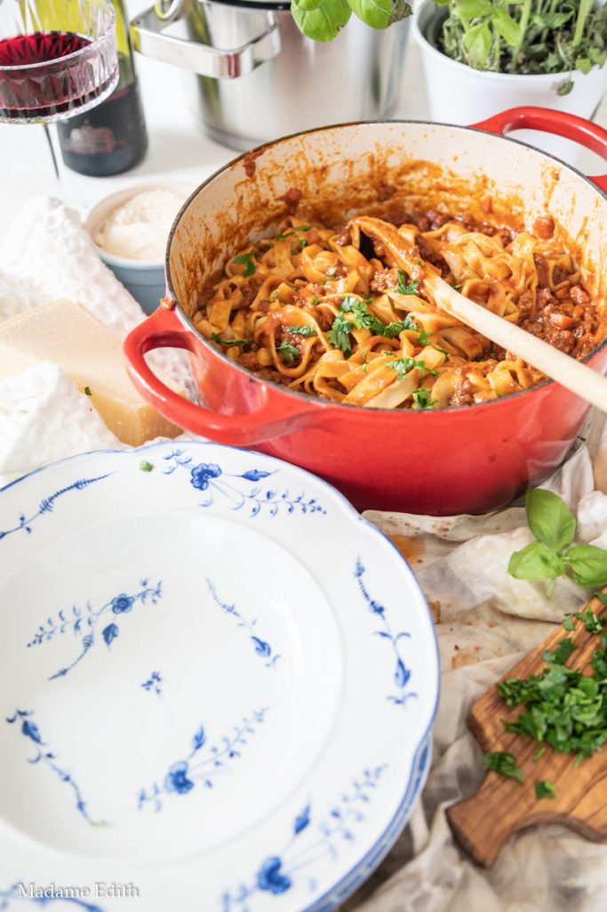

Ragu

Ragu-bolognese:
Pyszny sos na bazie pomidorow
Im dłużej gotujesz tym lepszy smak
Składniki
- oliwa z oliwek!
- sofritto (mirepoix)
- 50g boczku
- 500g mięsa mielonego
- 200ml czerwonego wina wytrawnego
- 200g koncentratu pomidorowego
- 250ml bulionu
- 200ml mleka
Przepis
- W żeliwnym naczyniu podgrzewamy parę łyżek oliwy
- Wrzucamy drobno posiekane sofritto
- Po 10 minutach wrzucamy mięso mielone wraz z boczkiem, drobno posiekanym
- Poczekajmy aż mięso zbrązowieje
- Dodajemy wino i czekamy aż cały alkohol ulotni się z wywaru (3-5minut)
- Dodajemy koncentrat pomidorowy i buliony
- Zagotowujemy i zmniejszamy ogień do minimum
- Zostawiamy na 90minut, mieszając raz na 10minut
- W połowie gotowania dodajemy mleko
Jeśli gotujemy 6h to po 3h etc....
- Na końcu podajemy z makaronem tagiatelle
Go back